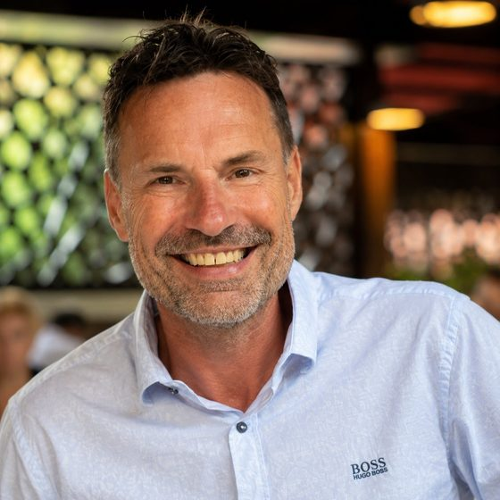

Einer hat ChatGPT entdeckt. Ein paar probieren ab und zu. Der Rest wartet ab. Gleichzeitig steckt Ihr bestes Wissen in den Köpfen von Leuten, die irgendwann gehen.
Ich baue Ihrem Unternehmen ein Gedächtnis: ein KI-System, das Ihr Firmenwissen speichert und auf jede Frage eine echte Antwort gibt. Und ich nehme Ihr ganzes Team mit auf den Weg. Von "KI? Kenne ich nicht" bis "Wie haben wir eigentlich ohne gearbeitet?"
Jeder hat einen Peter. Den Kollegen, der seit 25 Jahren da ist und jede Norm kennt, jeden Kunden, jeden Trick. Wenn jemand eine Frage hat, heißt es: "Frag den Peter."
Und wenn Peter in Rente geht? Dann heißt es: "Das müsste irgendwo stehen." Und alle wissen: Es steht nirgendwo.
Rund 80 Prozent des Firmenwissens lebt nur in den Köpfen Ihrer Mitarbeiter. In den nächsten 15 Jahren erreicht knapp ein Drittel aller Erwerbspersonen in Deutschland das Rentenalter. Das ist keine Statistik. Das ist Montag.
Fraunhofer-Untersuchungen zum Wissensmanagement (Anteil impliziten Wissens, 80 bis 90 Prozent). Harvard Business Review (Einarbeitungsdauer). Statistisches Bundesamt, Pressemitteilung 2025: 13,4 Millionen Erwerbspersonen erreichen in den nächsten 15 Jahren das gesetzliche Rentenalter. McKinsey Global Institute (Suchzeit von Wissensarbeitern).
Sechs Fragen, drei Minuten. Keine E-Mail-Adresse, kein Login, kein Newsletter. Am Ende steht eine Zahl für Ihr Büro, nicht für die Branche.
Kein Feature-Katalog. Sondern drei Momente aus dem echten Arbeitstag. Und wie sie sich verändern.
47 ungelesene E-Mails. 3 Chat-Fenster. Ein Zettel am Bildschirm: "Herr Weber hat angerufen, dringend!" Aber worum ging's?
Ihr Bildschirm zeigt drei Dinge: Was heute ansteht. Zwei Nachrichten von Kollegen. Eine Entscheidung, die auf Sie wartet.
"Frag den Peter." Aber Peter ist auf der Baustelle. Also wartet Mia. Oder fragt dreimal den falschen Kollegen.
Mia fragt das System. Bekommt eine Antwort. Sofort. Am zweiten Tag stellt sie bessere Fragen als manche nach sechs Monaten.
30 Jahre Erfahrung gehen mit ihm durch die Tür. Sein Nachfolger braucht ein Jahr, bis er halb so gut ist.
Peters Wissen ist im System. Sein Nachfolger findet, was Peter wusste. Und fragt die KI bei Unsicherheit.
E-Mail: Sie speichern und müssen wiederfinden.
Firmengedächtnis: Sie erzählen und bekommen Antworten zurück.
Kein IT-Projekt, sondern ein Veränderungsprozess. Und kein Sprung ins Unbekannte, sondern ein Weg mit klaren Etappen, auf dem jeder Schritt schon etwas bringt.
Zuhören. Ich komme zu Ihnen. Einen Tag lang. Ich höre zu, stelle Fragen, verstehe wie Ihr Wissen fließt und wo es hängenbleibt.
Am Ende wissen Sie zum ersten Mal, wo Ihr Unternehmen verwundbar ist. Wo steckt welches Wissen, und was geht verloren, wenn Person X morgen nicht mehr da ist.
Aufbauen. Ihr Wissen wird Teil des Systems. Schritt für Schritt, ohne etwas umzuwerfen. Ihre Dateien bleiben wo sie sind.
Die wichtigsten Prozesse sind dokumentiert. Jeder hat sein erstes Gespräch mit der KI geführt. Die Hemmschwelle sinkt.
Mitnehmen. Ihr Team lernt, mit dem System zu arbeiten. Nicht im Schulungsraum, sondern am echten Arbeitsplatz, mit echten Fragen. Die Skeptiker zuerst.
„Frag das System“ wird zur echten Alternative. Die Neugierigen sind begeistert, die Skeptiker geben zu: „OK, das ist anders.“
Loslassen. Ich trete zurück. Nach ein paar Monaten brauchen Sie mich nicht mehr.
Das System gehört zum Alltag. Der Geschäftsführer sieht monatlich, wo das Unternehmen steht.
Ab hier ohne mich.
Wissen bleibt, egal wer kommt oder geht. Einarbeitung in Wochen statt Monaten. Das Team arbeitet aus einer gemeinsamen Basis.

Am Anfang sagen die meisten: "KI ist nichts für uns." Am Ende fragen sie: "Warum haben wir das nicht früher gemacht?"
Bei uns arbeitet er mit.
Ein Wissenssystem fällt selten mit Getöse durch. Es wird einfach nicht benutzt. Und meistens liegt das an einer Stelle, die bei der Vorführung nie drankommt.
Diese Stellen suchen wir, bevor Sie darauf stoßen. Dafür gibt es ein erfundenes Architekturbüro mit erfundenen Projekten und sechs Mitarbeitern, die jeden Tag dasselbe wollen wie Ihre.
Jede mit eigenem Motiv, eigener Ungeduld und einem eigenen Grund, das System liegen zu lassen.
Keine Erkundung. Aufgaben aus dem Alltag, formuliert mit dem Zeitdruck, den der Alltag hat.
Wer sich selbst bewertet, bewertet großzügig. Jedes "gelöst" wird gegengeprüft, bevor es zählt.
Warum wir das machen: Solche Systeme scheitern selten daran, dass etwas fehlt. Sie scheitern daran, dass zwei Stellen etwas Verschiedenes sagen und keine dazuschreibt, welche gilt. Genau danach suchen wir. Mit Absicht, immer wieder.
Nichts wird weggeworfen. Sie haben zehn Jahre an Ihrer Ordnerstruktur gebaut, und die funktioniert. Ihre Dateien, Ihre Ordner, Ihre Tools bleiben. Das Firmengedächtnis wird darüber gelegt. Nicht daneben, nicht stattdessen.
Das System liest Ihre bestehenden Dateien, erstellt schlanke Index-Dateien und weiß danach, was in jedem Dokument steht. Ohne es zu verschieben. Die Dateien bleiben, wo sie sind.
Und es wächst mit Ihrem Team. Erst die wichtigsten Prozesse, dann Schritt für Schritt mehr. Jeder hat Zeit, reinzuwachsen. Kein Big Bang, kein "ab Montag alles anders".
Eintippen, diktieren, Foto machen, Datei reinwerfen. Die KI sortiert alles in die richtige Kategorie. Kein Formularsystem, keine Schulung nötig.
Frage schreiben, Antwort bekommen. Aus Ihrem echten Firmenwissen, nicht aus dem Internet. Funktioniert auch vom Handy.
Täglicher Check auf neue Inhalte. Wöchentliche Aufräumrunde. Monatlicher Report an den Geschäftsführer. Das System pflegt sich selbst.


Berater für KI, Veränderung und Zusammenarbeit aus Würzburg.
Ich begleite seit vielen Jahren Unternehmen durch Veränderungsprozesse: agile Transformation, Teamarbeit, Führung. KI ist für mich die konsequente Fortsetzung dieser Arbeit. Ein Werkzeug, das Entscheidungen verbessert und Freiräume schafft, wenn man es richtig einführt.
Meine Arbeitsweise: direkt, pragmatisch, kritisch. Keine Technikshow. Sichtbare Ergebnisse.
„Nicht alles selbst wissen. Aber die richtigen Fragen stellen."
Kein Pitch. Kein Verkaufsgespräch. Ein Kaffee und ein offenes Gespräch darüber, wo in Ihrem Unternehmen Wissen steckt, das nicht verloren gehen sollte.
Wenn danach klar ist, dass ein Firmengedächtnis für Sie Sinn macht, sprechen wir über den Weg dorthin. Wenn nicht, hatten Sie einen guten Kaffee.
BAFA-Registrierung läuft · 50% Förderung für KMU möglich
Oder direkt: kurt@ki-kurt.de · 0931 46774354 · Würzburg · remote & vor Ort